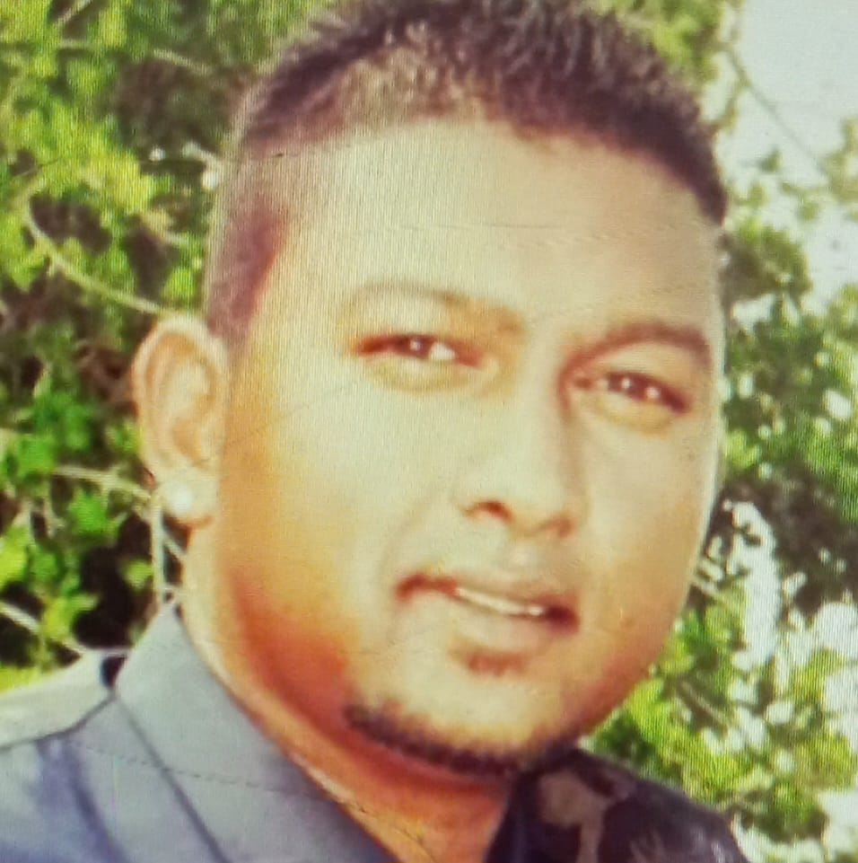

I am an applicant with lots of dynamic qualities to offer. I have long searched for a position whereby windows of opportunity may be opened to me. Having a fairly diverse background I would like to present my resume to you. It can be seen on perusing my resume that I have gained many valuable cross-functional skills, and I am willing to consider a range of job prospects. I am a hard worker and I am able to communicate and work with a diverse range of people from casual staff to Regional Management. I am able to cope without supervision and also work under pressure. I thrive on a challenge. My previous and current experience has been in the field of construction and aluminium. I am in possession of a certificate of construction management from the University of Capetown since 2021. I am also currently studying at Hyperion development towards a software engineer certificate and I am in the process of completing it.
Name : Ashan Ramsunder Contact no : 0826506711 Email Address : Ashanramsunder47@gmail. linkin : linkedin.com/in/ashan-ramsunder-b937a4230 
* Management of multiple site * Working within a Team * Problem-Solving * Project Planning * Day-to-day planning of sites * Advanced project planning * Allocation of Staff & sub-contractors * Communication with Architects * Reading & Interpretation of Architectural Drawings * Health & Safety 87a onsite * Health & Safety file management * Inspection of installations * Attention to detail * Supervision of installations * Ordering of materials * Conflict management * Thinking outside the box, yet staying with company rules & regulations * Snags & Handover of site
Python, Java, HTML, CSS, SQL Teamwork, Multitasking, & attention to detail Software and web development. Completed a Software Engineering Bootcamp, in which I created programs in Java and Python. I also wrote applications that interact with a database
Construction Management Certificate @ UCT 2021 Installing Hulabond Certificate @ HBS 05-10-2017 NuKlip Training Certificate @ HBS 14-06-2017
Site Manager @ GLASS RITE 2018 -2022 Centurion Site Manager @ ALU-TECH Solutions 2017 -2018 Centurion Team Leader @ SHESHA Engineering 2016 -2017 Durban ( Aluminium & Steel ) Windscreen Installer @ GrandMark International 2011 - 2016 Durban ( Only Insurances Work) Team Leader Under Sub-Contractor @ CITY GLASS & H/B Interiors 2007 -2010 Durban
https://github.com/Ashan1-hub/task11 https://github.com/Ashan1-hub/capstone07-lev2 https://github.com/Ashan1-hub/capstone29-lev1 https://github.com/Ashan1-hub/task19-lev1 https://github.com/Ashan1-hub/gitTask https://github.com/Ashan1-hub/capstone07-lev-02 https://github.com/Ashan1-hub/task10_capstones1 https://ashanramsunder.blogspot.com/2023/01/is-difference-between-process-and.html https://ashanramsunder.blogspot.com/2023/01/interfaces.html